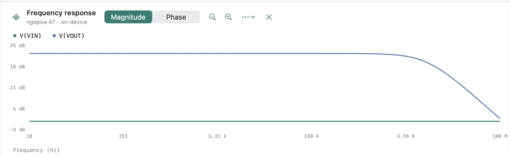
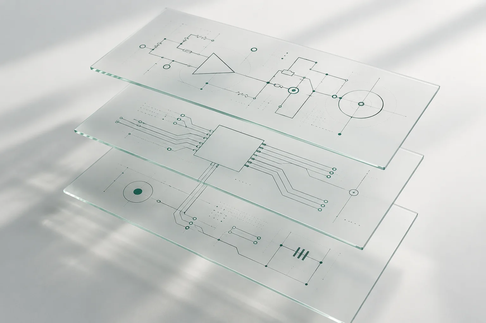
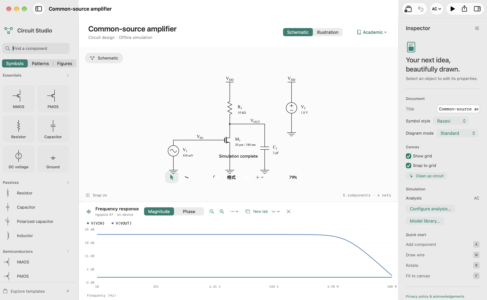
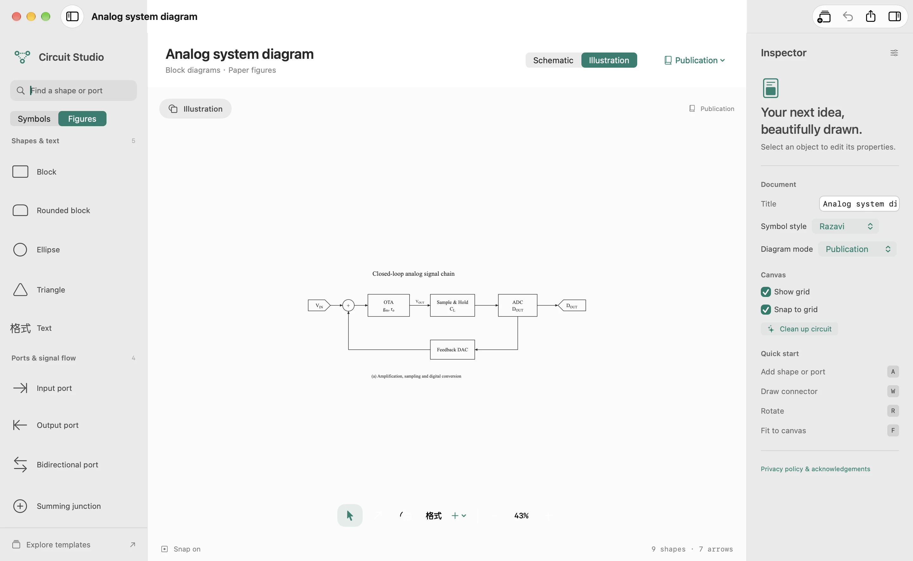
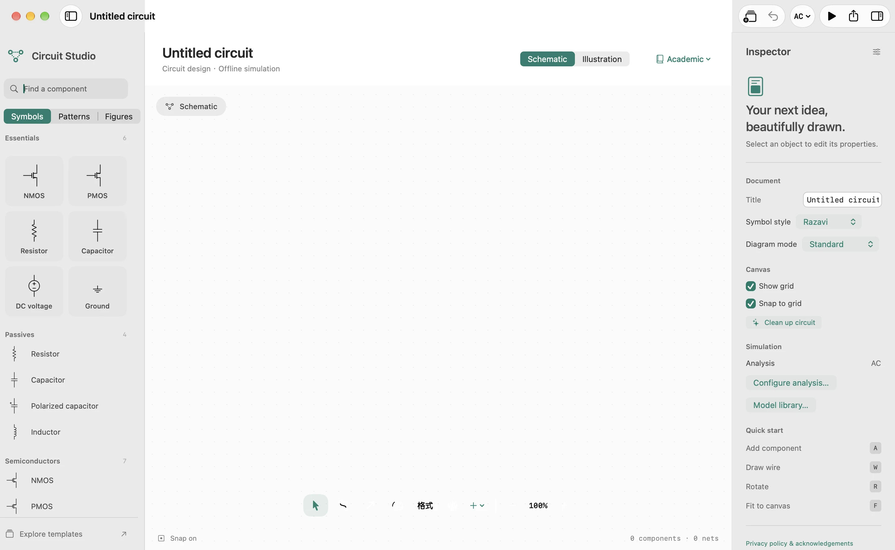
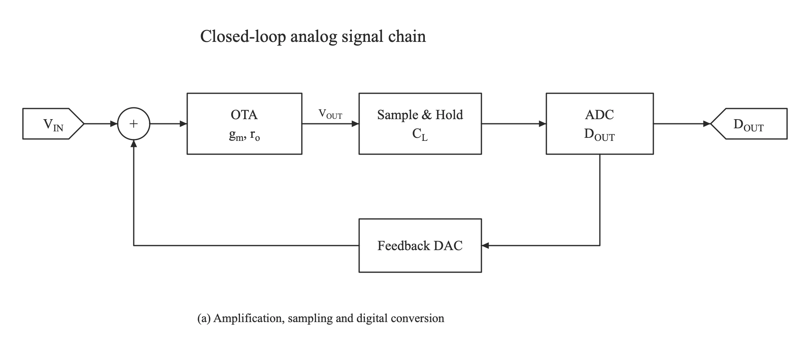

Schematic画完电路，
画完电路，
直接看见响应。
内置 ngspice 47。本机运行工作点、DC、AC 与瞬态分析，离线也能验证设计。仿真结果可在新标签页或窗口中独立查看。
OPDCACTRAN


打开就是空白。选择工作模式，再落下第一笔。



元件、连线、工程参数与波形，在同一个工作空间。
电路需要准确，图示需要清楚。
把两件事都交给顺手的工具。
内置 ngspice 47。本机运行工作点、DC、AC 与瞬态分析，离线也能验证设计。仿真结果可在新标签页或窗口中独立查看。

用模块、端口、求和节点和连接箭头讲清信号路径。自由绘图，专注框图与论文插图。

矢量导出保持线条清晰，数学标签保留下标。
论文、课件与设计记录，都有合适的出口。
SwiftUI 界面，Mac 文档窗口、快捷键与撤销重做。
绘图和仿真在本机完成，不需要账号或网络。
应用代码采用 MIT 许可。欢迎改进，也欢迎分享。
下载后，双击磁盘映像文件。
把 Circuit Studio 拖到「应用程序」文件夹。
Schematic 仿真，Illustration 画框图。
当前直接下载版尚未经过 Apple 公证。若 macOS 阻止打开，请先尝试启动，再到「系统设置 → 隐私与安全性」选择「仍要打开」。Apple 打开说明 ↗
可以。在画布顶部切换 Schematic 与 Illustration，已有图形会保留。模式随文档保存，也能撤销切换。Illustration 中隐藏仿真工具，Schematic 中可使用离线仿真。
不需要。ngspice 47 已随 Mac 应用打包，支持工作点、DC 扫描、AC 分析和瞬态分析。当前不包含 Noise、Monte Carlo、OSDI 插件或 XSPICE 动态代码模型。
可以。旧版 .circuit 文档会自动识别绘图模式。新版本保存为格式版本 3，包含模式、图形和连接关系。
访问 GitHub 仓库，查看源码、构建说明与发行记录，也可以在 Issues 中反馈问题。应用源码采用 MIT 许可，ngspice 保留自身许可。